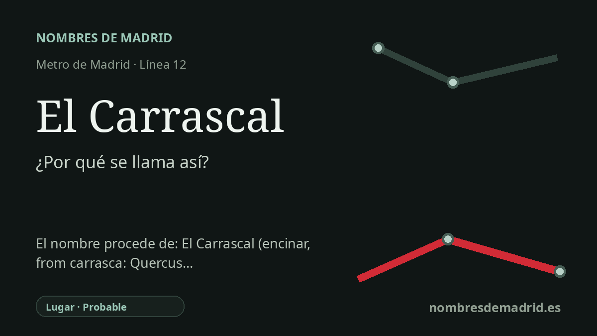

Publicado el · Investigación de Nombres de Madrid · Cómo verificamos cada origen · 8 fuentes consultadas
Respuesta rápida
La estación de El Carrascal recibe el nombre del barrio de Leganés al que da servicio. El topónimo es botánico y transparente: un carrascal es un sitio o monte poblado de carrascas, encinas generalmente pequeñas.
La historia del nombre
La estación de El Carrascal toma su nombre público de la zona de Leganés en la que se encuentra. El Consorcio Regional de Transportes de Madrid la incluye como estación de la línea 12, con accesos en la avenida Rey Juan Carlos I; el Ayuntamiento de Leganés identifica también allí la parada de MetroSur. En la práctica, el nombre orienta al viajero hacia el barrio de El Carrascal y su entorno residencial, cívico y comercial.
Detrás del nombre del barrio hay una palabra paisajística castellana muy clara. El Diccionario de la lengua española define carrascal como sitio o monte poblado de carrascas, y define carrasca como encina generalmente pequeña, o mata de ella, procedente de una raíz prerromana karr-. Toponomasticon Hispaniae trata igualmente El Carrascal como un topónimo botánico transparente y muy frecuente, derivado de carrasca con un sufijo colectivo o locativo.
El distrito urbano moderno forma parte de la gran expansión de Leganés en el siglo XX. Un estudio sobre el comercio y la estructura urbana de la periferia sur madrileña indica que el Plan General de Leganés se aprobó en enero de 1966, que Zarzaquemada se desarrolló según un plan de 1968 y que el polígono residencial de El Carrascal se aprobó en 1974. Eso sitúa el nombre dentro de una secuencia de crecimiento urbano planificado, no en una historia fundacional medieval.
MetroSur añadió una capa de transporte a esa geografía urbana. La Comunidad de Madrid describe la línea 12 como un anillo de más de 40 kilómetros que sirve a Alcorcón, Móstoles, Fuenlabrada, Getafe y Leganés, y enumera El Carrascal entre las estaciones leganenses, bajo la avenida Rey Juan Carlos I en una zona urbana consolidada. La línea entró en servicio el 11 de abril de 2003, por lo que el nombre de la estación parece incorporarse a la red de Metro con la apertura de MetroSur.
El origen botánico del término está bien sustentado; lo que queda menos documentado en las fuentes disponibles es por qué este sector concreto de Leganés se llamaba históricamente El Carrascal. Puede conservar un antiguo nombre rural de paraje, pero no se ha localizado un registro catastral o acuerdo municipal que explique el topónimo leganense en sí. En la explicación pública, la explicación más prudente es: la estación se llama así por el barrio de Leganés, cuyo nombre significa en último término un lugar con carrascas.